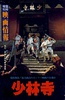

| 电影名 | 海报 | 剧情透析 | 上映时间 |
黄飞鸿之狮王争霸 |
晚清末年，大清帝国摇摇欲倒。面对外敌来袭，慈禧太后鼓励民间习武抗敌。李鸿章为了逢迎太后，举办起一年一届的“狮王争霸”大赛。“狮王争霸”其实就是各们各派舞起狮子头，以武力争夺锦标。 “狮王争霸”的消息一传出，各大门派纷纷摩拳擦掌，暗中招兵买马。一时，京城门派冲突四起。黄飞鸿（李连杰 饰）上书李鸿章欲取消“狮王争霸”，无奈李鸿章没有理会。无奈之下，黄飞鸿只好亲自参加“狮王争霸”，阻止各门派的自相残杀。 “狮王争霸”终于开锣了！这天校场上尘土飞扬，各门派自造的形象各异、杀伤力极强的“狮子头”粉墨登场。黄飞鸿亲自率领鬼脚七等徒弟也赶到了…… |
1993-02-11(香港) |
|
少林寺 |
 |
隋朝末年，隋将王世充的侄子王仁则（于承惠 饰）在督建河防工事时，杀死了起来反抗暴虐的神腿张，但令其儿子小虎子跳河逃离虎口。小虎子被少林僧人救起收入寺中后，为报父仇毅然削发为僧，法名“觉远”（李连杰 饰）。
王仁则的侍卫长遇见牧羊女白无瑕（丁岚 饰）后垂涎其美色，强行将其 抢回府并欲酒 后施暴，恰巧被只身前来报仇的觉远发现。在救白无瑕逃生的过程中，觉远因武功欠佳被王仁则刺伤，促使其回到少林寺后更加刻苦练功。后因觉远救援被王仁则追赶的李世民，少林寺遭遇劫难，觉远身上的责任更重一层。 |
2015-12-31(中国大陆) |
教父1 |
40年代的美国，“教父”维托·唐·柯里昂（马龙·白兰度 饰）是黑手党柯里昂家族的首领，带领家族从事非法的勾当，但同时他也是许多弱小平民的保护神，深得人们爱戴。
因为拒绝了毒枭索洛索的毒品交易要求，柯里昂家族和纽约其他几个黑手党家族的矛盾激化。圣诞前夕，索洛索劫持了“教 父”的参谋汤姆，并派人暗杀“教父”；因为内奸的出卖，“教父”的大儿子逊尼被仇家杀害；小儿子麦克（阿尔·帕西诺 饰）也被卷了进来，失去爱妻。黑手党家族之间的矛盾越来越白热化。
年老的“教父”面对丧子之痛怎样统领全局？黑手党之间的仇杀如何落幕？谁是家族的内奸？谁又能够成为新一代的“教父”？
血雨腥风和温情脉脉，在这部里程碑式的黑帮史诗巨片里真实上演。 |
1972-03-15(纽约首映) / 1972-03-24(美国) |
|
教父2 |
影片主要讲述第二代教父麦克·柯里昂（阿尔·帕西诺 饰）的奋斗历程，同时回忆了第一代教父维多·柯里昂（罗伯特·德尼罗 饰）创业的艰辛，反映了不同历史时期，两代教父的事业、家庭生活。
麦克为儿子托尼举行圣餐仪式和庆祝活动的当夜，麦克在家中遭到袭击，凶手被人灭口，面临接管家族事业以来的重重危机，麦克回忆起了父亲维多·柯里昂年轻时在美国的创业历程。
麦克一边调查袭击的真相，一边继续开展赌博、酒店等生意，和另一个黑帮人物海门罗斯斗智斗勇，不断扩大势力。
终于，麦克的不法行为引起了政府的关注，麦克受到一系列的指控；同时，麦克的家庭也遇到了危机，夫妻感情濒临破裂；而最让麦克痛心的，却是家族中，亲人的背叛。和第一代教父其乐融融的家庭生活比起来，麦克无疑很失败。
麦克怎么样面对事业、家庭的双重危机？为什么两代教父会有截然不同的家庭生活？让我们自己在影片中寻找答案。 |
1974-12-20(美国) |
|
教父3 |
转眼间已经是1979年，第二代教父麦克•柯里昂（阿尔•帕西诺 饰）到了垂暮之年，为了灵魂的救赎，麦克慢慢结束家族的黑道事业，转投正当生意。
麦克的儿子托尼酷爱艺术，无意接手家族事业，迈克尔决定让大哥逊尼的私生子，火爆好色的文森（安迪•加西亚 饰）继承家业，当第三代教父。麦克的爱女玛丽（索菲娅•科波拉 饰）和文森相恋，遭到父亲的反对，父女渐渐疏远。
为了使家族资产合法化，麦克通过在梵蒂冈教廷的关系网，准备投资“屹立”集团，却遭到敌人的暗中阻挠，教皇的去世也让事情更加扑朔迷离。
麦克无奈之下，只能重新选择用暴力解决问题，他的亲人也被卷入了这场血雨腥风。 |
1990-12-20 |
copyright:elephent